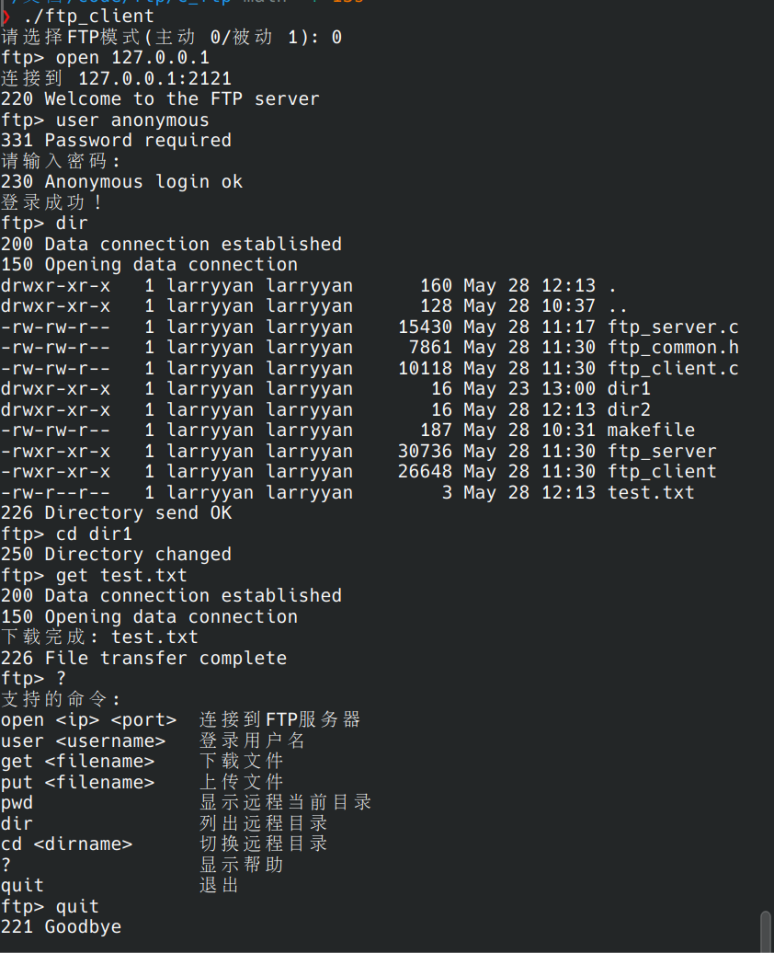
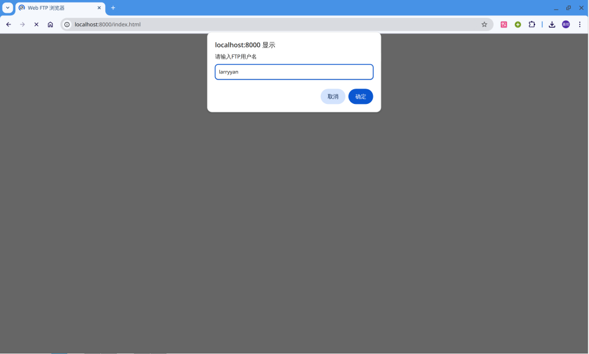
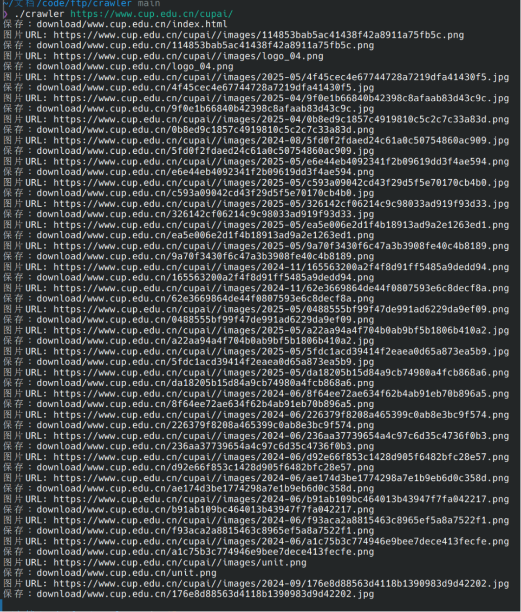
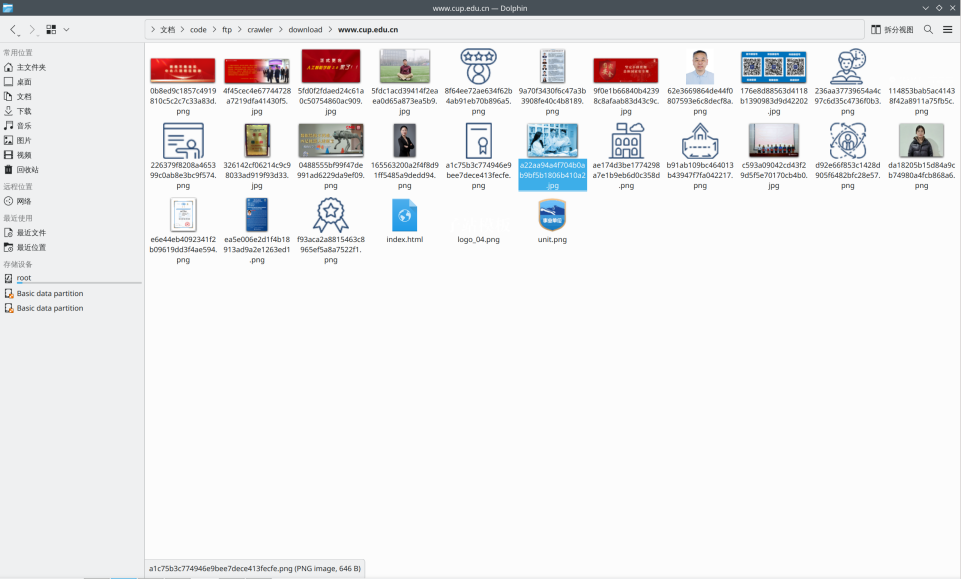

计算机网络实习-FTP与爬虫项目
本项目为计算机网络实习课程的作业。
项目包含以下部分：
- 用C语言实现的FTP服务器
- 用C语言实现的FTP客户端
- 用Python语言实现的基于Web的FTP文件浏览器
- 用C语言实现的基于Socket的网页爬虫
所有FTP客户端/服务器和爬虫均需在Linux操作系统下运行。
准备工作
编译C语言服务器、客户端和爬虫
1 | |
安装所需Python依赖包
Ubuntu / Debian
1 | |
Arch Linux
1 | |
运行方法
FTP服务器
1 | |
FTP客户端
1 | |

基于Web的FTP浏览器
1 | |

- 使用你的账号和密码登录
基于Socket的网页爬虫
1 | |


- 网站及图片已下载到 download/“域名” 文件夹中。
计算机网络实习-FTP与爬虫项目
https://blog.yanjz.top/FTP-Homework/